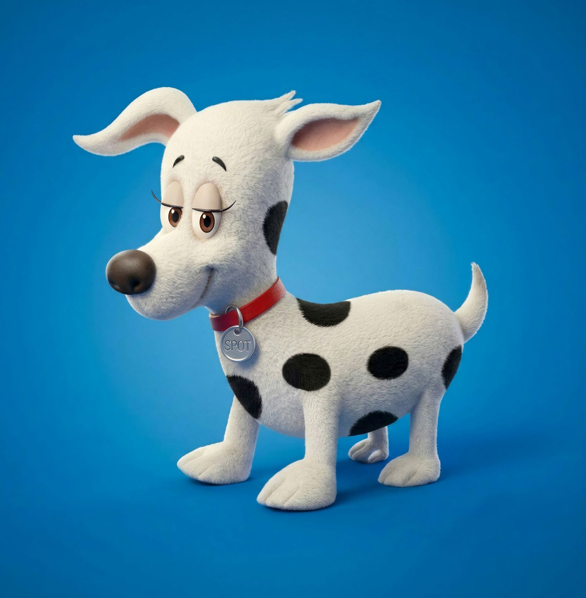
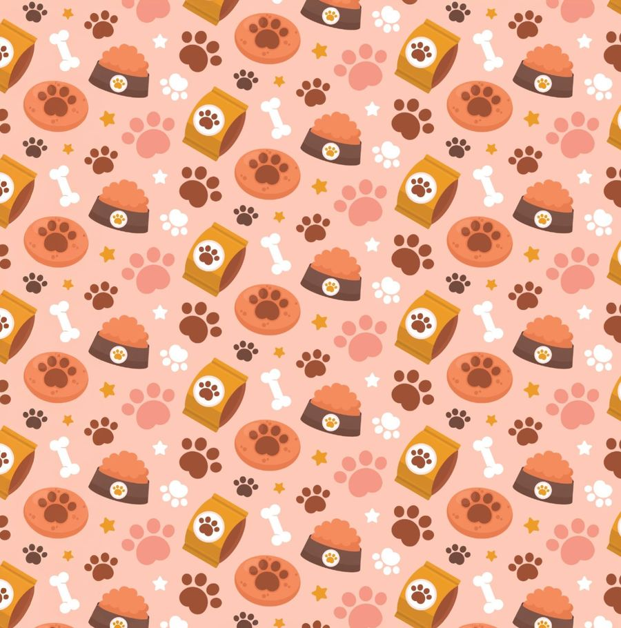
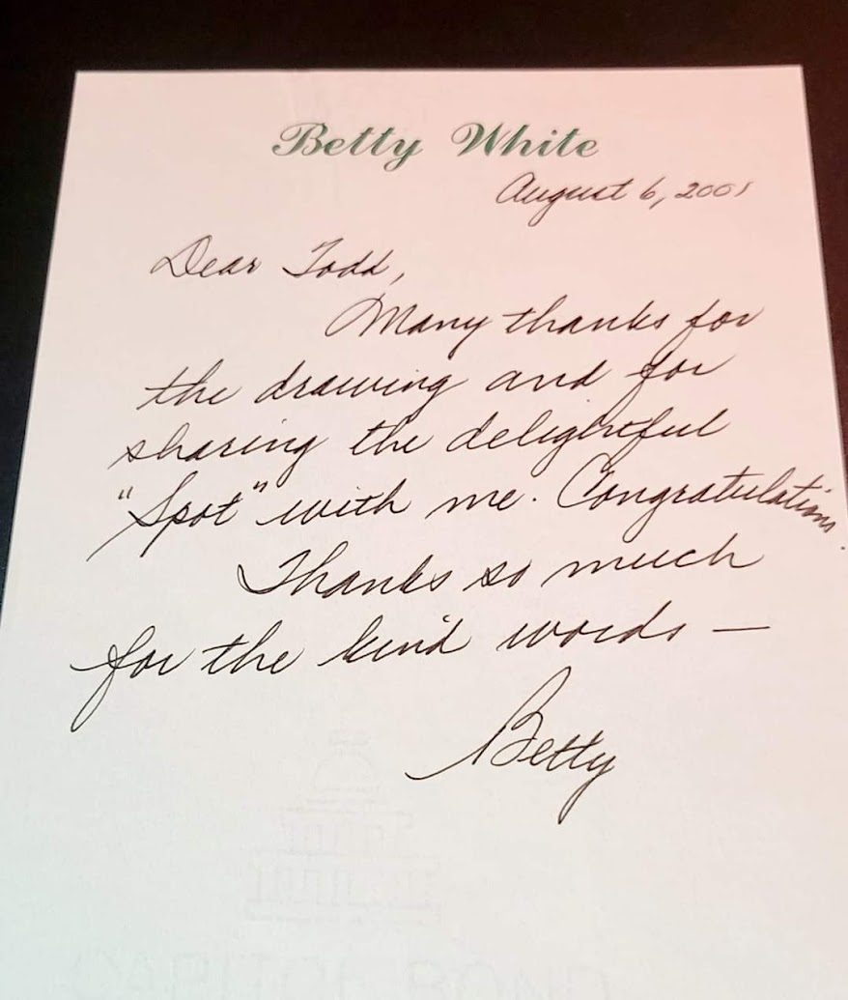
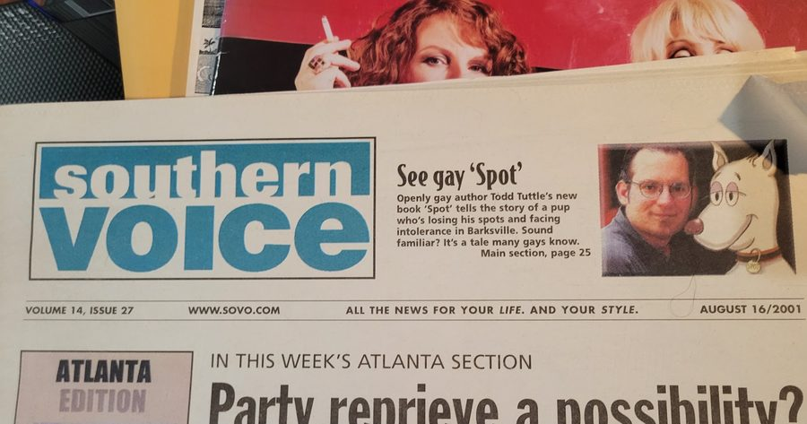
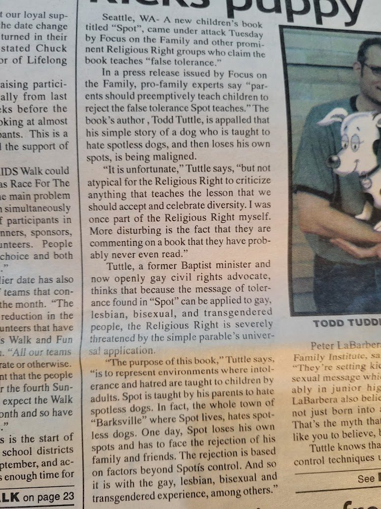
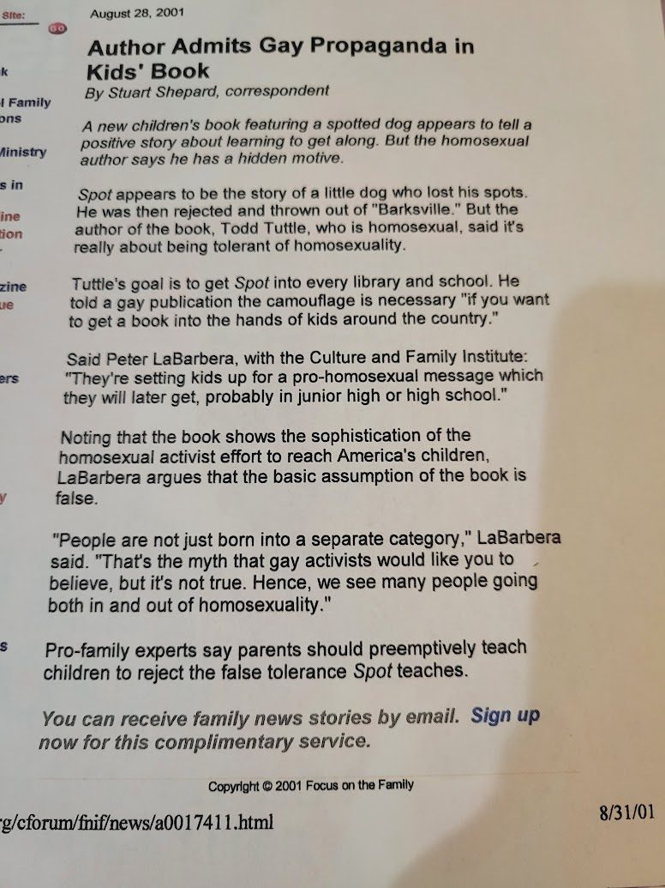
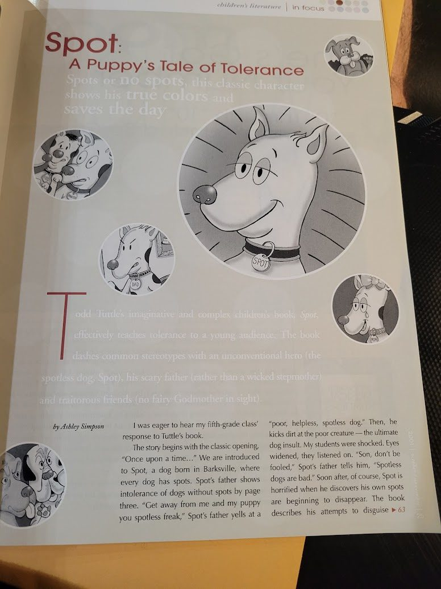
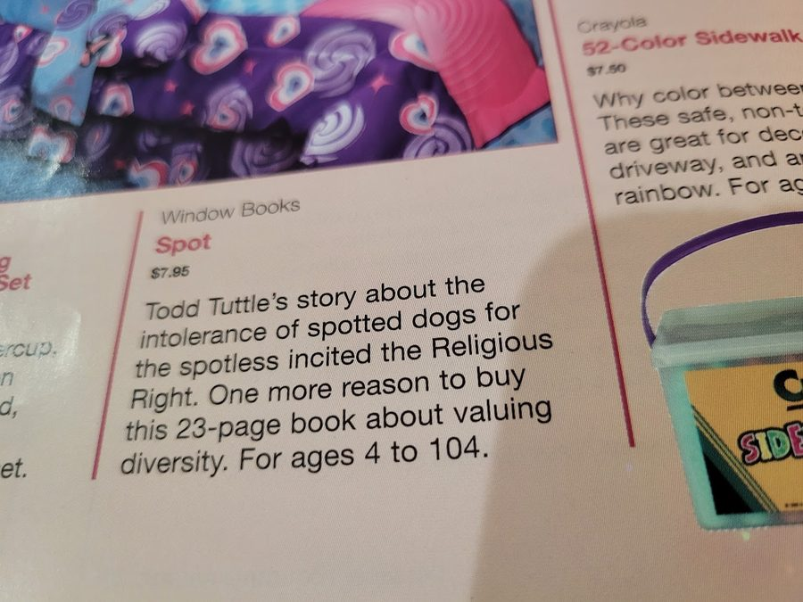
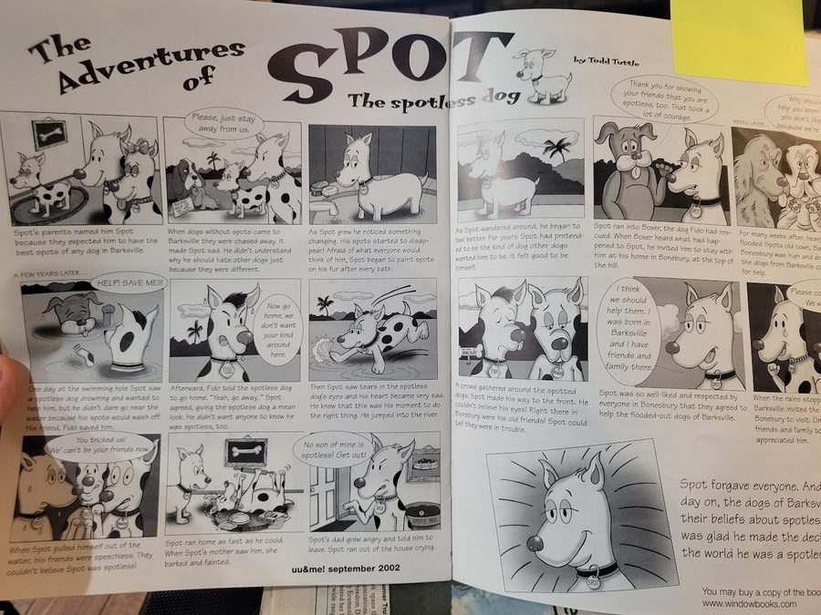

Spot is a puppy with a big secret. As his spots disappear, he learns what it costs to hide who you are — and what it means to finally stop. A quarter-century later, his story is more welcome than ever.

In Barksville, every dog has spots — and dogs without them are chased away. When Spot's own spots start to fade, he paints them back on every day rather than let anyone find out who he really is.
When he finally washes the paint away to do the right thing, his friends and family turn on him. It takes a spotless dog named Boxer — one Spot once helped chase off — to show him what real acceptance looks like.
Spot doesn't spell out what it's really about. It doesn't have to. Readers who've felt pressure to hide part of themselves tend to recognize the story immediately — which is exactly why, in 2001, it became a target, and exactly why ABY Press is bringing it back for a new generation.
What can we learn from Spot?

When Spot came out in 2001, it earned a handwritten thank-you from Betty White — and an attack from the Religious Right. Both reactions are part of the story.
"Many thanks for the drawing and for sharing the delightful 'Spot' with me. Congratulations!"
— Betty White, in a handwritten letter to Todd Tuttle"Todd Tuttle's imaginative and complex children's book, Spot, effectively teaches tolerance to a young audience."
— Ashley Simpson, teacher and writer"The book, Spot, is a children's book with very complex morals. It teaches acceptance, respect and forgiveness."
— Mark, age 10, fifth-grade reader






Recognized among the year's standout LGBTQ+ literature. (Placeholder — confirming the exact award year and category with Lambda Literary before this goes live.)
The 25th Anniversary Edition is available now. Buy a copy for yourself, or gift one to a children's hospital or a disability-empowerment charity.
Todd Tuttle is the author and illustrator of Spot, originally published by Window Books in 2001. Based in Southern California, he creates inclusive stories and expressive artwork that reflect humor, heart and imagination. Through Spot and his other creative work, Todd celebrates stories where every child can see themselves.
ABY Press — "Always Be Yourself" — takes its name straight from the lesson at the end of Spot's story. Spot is the first of several planned children's books celebrating diversity, including stories that speak to racial and disability experiences.